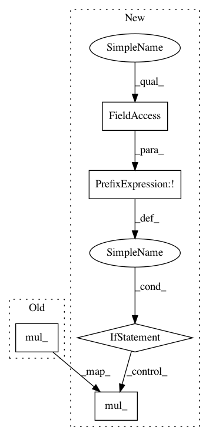

6fefdb7623dca67877be70b5b2da53462684eea6,sru_functional.py,SRUCell,reset_parameters,#SRUCell#,195
Before Change
w = self.weight.data.view(self.n_in, -1, self.n_out, self.k)
w[:, :, :, 1].mul_(0.5**0.5)
w[:, :, :, 2].mul_(0.5**0.5)
self.weight_c.data.mul_(0.5**0.5)
self.scale_x.data[0] = 1
if not rescale:
return
After Change
else:
self.bias.data[n_out:].zero_().add_(bias_val)
if not self.v1:
// intialize weight_c such that E[w]=0 and Var[w]=1
self.weight_c.data.uniform_(-3.0**0.5, 3.0**0.5)
// rescale weight_c and the weight of sigmoid gates with a factor of sqrt(0.5)
w[:, :, :, 1].mul_(0.5**0.5)
w[:, :, :, 2].mul_(0.5**0.5)
self.weight_c.data.mul_(0.5**0.5)
else:
self.weight_c.data.zero_()
self.weight_c.requires_grad = False
self.scale_x.data[0] = 1
if not self.rescale:
return
// scalar used to properly scale the highway output
In pattern: SUPERPATTERN
Frequency: 3
Non-data size: 5
Instances
Project Name: asappresearch/sru
Commit Name: 6fefdb7623dca67877be70b5b2da53462684eea6
Time: 2018-07-25
Author: taolei@csail.mit.edu
File Name: sru_functional.py
Class Name: SRUCell
Method Name: reset_parameters